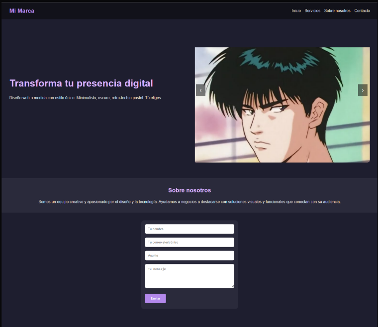

Portafolio
Aquí puedes ver algunos de mis proyectos recientes y ejemplos de lo que puedo crear para ti.
Cada web es única, adaptada a la identidad y necesidades de cada cliente.

Landing Creativa Dark
Sitio para marcas modernas, creativos y negocios que buscan un look alternativo y memorable.
HTML, CSS, JS

Landing Corporativa Blue
Web para empresas y profesionales formales. Diseño limpio, secciones claras y formulario de contacto.
HTML, CSS, JS